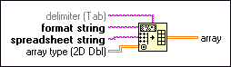

Spreadsheet String To Array Function
Owning Palette: String Functions
Requires: Base Development System
Converts the spreadsheet string to an array of the dimension and representation of array type. This function works for arrays of strings and arrays of numbers.
The connector pane displays the default data types for this polymorphic function.

 Add to the block diagram Add to the block diagram |
 Find on the palette Find on the palette |